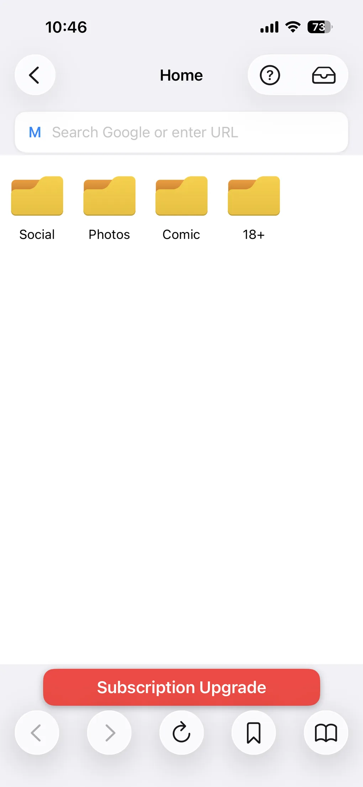
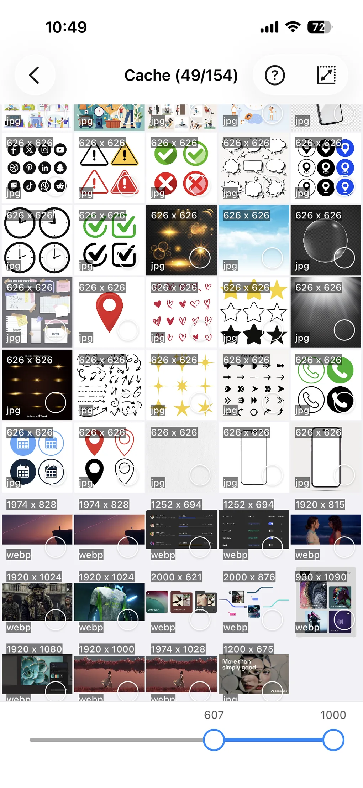
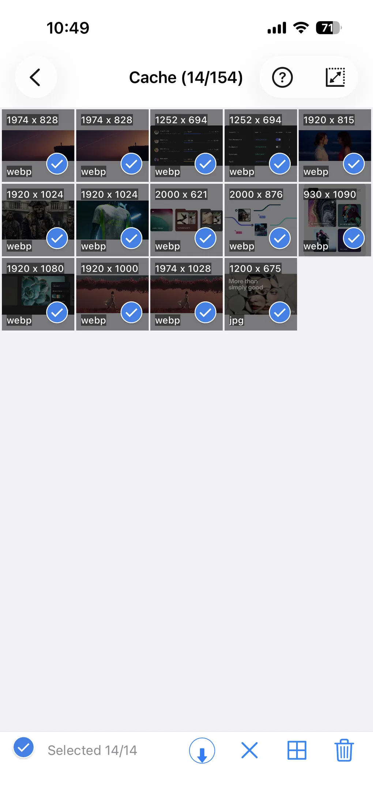

Cómo descargar imágenes de galerías de noticias y foros de fotografía
Las galerías de fotos de noticias y los foros de fotografía están llenos de imágenes que vale la pena conservar, pero descargarlas una por una es lento y frustrante. ImageGet lo cambia: pega una URL y la app reúne todas las imágenes de la página para que las revises y las guardes con un toque. Así se descargan imágenes de galerías de noticias y foros de fotografía, paso a paso.
Descarga ImageGet gratis — guarda imágenes de galerías y foros con un toque.
Descargar ImageGetPaso 1: pega la URL de la galería o del foro
Abre ImageGet y pega el enlace de la galería de noticias, el artículo o el hilo del foro que quieras guardar. Puedes copiar la URL desde cualquier navegador o usar el navegador integrado de ImageGet para visitar el sitio directamente. ImageGet analiza la página y empieza a reunir sus imágenes.

Paso 2: reúne todas las imágenes
ImageGet recoge todas las imágenes de la página: las fotos de una galería de noticias y las imágenes a tamaño completo de un hilo del foro, incluidas las que se cargan al desplazarte. No hace falta hacer clic derecho y guardar cada una. Si una noticia ocupa varias páginas, pega cada URL y deja que ImageGet las reúna todas.

Paso 3: selecciona y descarga
Revisa las imágenes reunidas en una cuadrícula limpia. Toca cualquiera para verla a pantalla completa, selecciona las fotos que quieras conservar y descárgalas a tu fototeca con un toque. Usa Smart Filtering para descartar miniaturas y avatares y quedarte solo con las fotos a tamaño completo.

Consejos para guardar desde galerías y foros
- Descarga una galería entera — descarga por lotes toda una galería de noticias o un hilo del foro de una vez.
- Usa Smart Filtering — descarta miniaturas, avatares e iconos y quédate solo con las fotos a tamaño completo.
- Respeta los derechos de autor — guarda solo imágenes que tengas derecho a conservar y cita siempre al fotógrafo original.
FAQ
¿Puedo descargar una galería de noticias completa de una vez?
Sí: pega la URL de la galería y usa el modo por lotes para descargarla entera de una vez.
¿Descarga las fotos con la máxima calidad?
Sí: las fotos se guardan a resolución completa, sin compresión ni marcas de agua.
¿Con qué sitios funciona?
Con cualquier sitio que puedas navegar: galerías de noticias, foros de fotografía e hilos de comunidad.
Verlo. Guardarlo. Sencillo.
Descarga ImageGet gratis y guarda imágenes de galerías y foros con un toque.
Descargar ImageGet